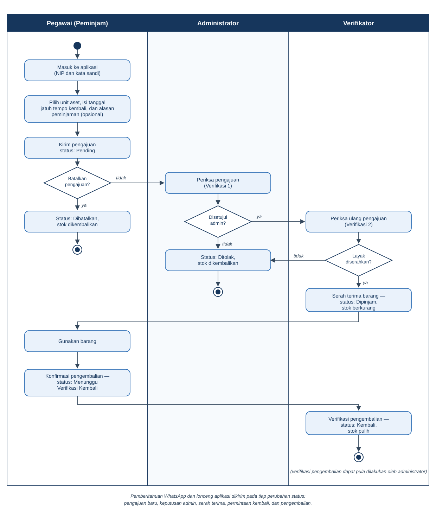
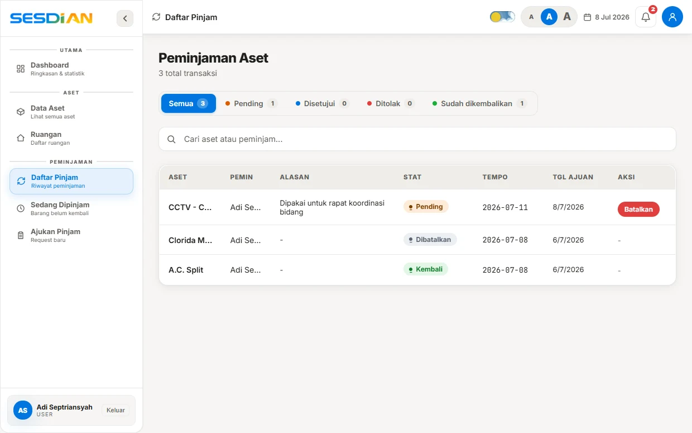

Laporan ini mendokumentasikan pelaksanaan kegiatan pengujian sistem informasi SESDIAN (Sistem Digital Inventarisasi Aset Negara) pada Milestone M5 (Fase 5: Pengujian dan Penerapan) sesuai dengan Work Breakdown Structure (WBS) resmi proyek. Pengujian sistem dirancang untuk memastikan bahwa seluruh fungsi yang telah diselesaikan pada Sprint 1 (Akun & Katalog), Sprint 2 (Peminjaman Dua Lapis & QR), dan Sprint 3 (Inventarisasi Ruangan, Notifikasi, dan Laporan) bekerja dengan stabil, bebas cacat, aman dari manipulasi data, dan tahan terhadap kondisi ekstrem di lapangan.
Metodologi pengujian yang diterapkan mencakup empat pilar evaluasi terstruktur: pengujian kotak hitam (blackbox testing), pengujian akseptansi pengguna (user acceptance testing), pengujian keamanan aplikasi (application security testing), serta rekayasa kekacauan basis data (chaos database engineering). Pengujian dijalankan secara otomatis dan manual dengan mereplikasi beban kerja riil pada dataset 704 unit Barang Milik Negara (BMN) yang terdaftar di Balai Karantina Hewan, Ikan, dan Tumbuhan Lampung.
Seluruh skenario pengujian unit dan integrasi backend dieksekusi menggunakan test runner native Node.js (node:test) yang menjamin pengujian berjalan cepat tanpa dependensi berat pihak ketiga. Di sisi antarmuka, simulasi peramban dikendalikan melalui pustaka Playwright terotomasi untuk memeriksa alur interaksi pengguna secara menyeluruh.
Paket kerja SES-5.1.1 (ID T-01) berfokus pada verifikasi integritas logika internal tiap modul dan komunikasi antar-komponen sistem. Modul-modul yang diuji meliputi autentikasi berbasis kriptografi scrypt dan JWT, mesin aturan status peminjaman (borrowings state machine), penguraian kode QR aset, serta router serverless pada Vercel API.
Tabel 1 menyajikan rangkuman hasil pengujian unit dan modul yang dieksekusi pada test suite tests/auth.test.mjs dan tests/borrowings.test.mjs:
| ID Uji | Komponen & Skenario | Kriteria Keberhasilan | Status |
|---|---|---|---|
| UT-AUTH-01 | Verifikasi sandi benar vs salah | Sandi cocok lolos verifikasi, sandi keliru menghasilkan false | 100% PASS |
| UT-AUTH-02 | Pengacakan salt per-pengguna | Dua hash untuk kata sandi yang sama tidak pernah identik | 100% PASS |
| UT-AUTH-03 | Integritas tanda tangan JWT | Token sah terbaca; manipulasi muatan token ditolak seketika | 100% PASS |
| UT-BRW-01 | Persetujuan awal peminjaman | Hanya admin berhak menyetujui; status asal wajib 'pending' | 100% PASS |
| UT-BRW-02 | Verifikasi lapis kedua (serah terima) | Hanya verifikator berhak memvalidasi; status asal wajib 'approved' | 100% PASS |
| UT-BRW-03 | Pembatalan pengajuan mandiri | Peminjam berhak membatalkan sebelum serah terima barang | 100% PASS |
| UT-BRW-04 | Pencegahan transisi ilegal | Status tidak dikenal ('status-ngawur') otomatis ditolak | 100% PASS |
Berdasarkan pengujian modul, seluruh aturan transisi status peminjaman berhasil mengunci alur peminjaman dua lapis (Two-Tier Approval). Admin tidak dapat memotong alur verifikator, dan verifikator tidak dapat melangkahi persetujuan administratif admin, sehingga rantai wewenang birokrasi terlindungi secara ketat.
Pengujian akseptansi pengguna (User Acceptance Testing) dilaksanakan untuk menguji kesesuaian sistem dengan pengalaman kerja nyata dari empat persona pengguna di instansi. Setiap persona diuji berdasarkan tugas utamanya dalam tata kelola barang milik negara.

Berikut adalah hasil verifikasi skenario pada masing-masing peran pengguna:
1. Persona Pengguna Umum (Tamu / Publik): Pengguna dapat membuka halaman katalog tanpa login, mencari nama barang, memfilter kategori, serta melihat spesifikasi unit. Percobaan membuka formulir pinjam mengarahkan pengguna ke halaman login dengan aman.
2. Persona Pegawai (Peminjam): Pegawai berhasil login dengan NIP 18 digit, memilih unit barang pada katalog, menentukan tanggal jatuh tempo, dan mengirim permohonan. Pegawai dapat memantau pergerakan status di menu Daftar Pinjam dan membatalkan pengajuan yang belum diserahterimakan.

3. Persona Verifikator: Verifikator menerima antrean barang yang telah disetujui admin, memindai kode QR fisik barang pada saat serah terima, mencatat kondisi barang (baik/rusak), serta mengonfirmasi penyelesaian saat barang dikembalikan ke gudang.
4. Persona Administrator BMN: Administrator berhasil mengelola data 704 aset, menambah kategori baru, mengunduh laporan peminjaman dalam bentuk CSV, serta mencetak plakat QR ruangan.
Paket kerja SES-5.1.2 (ID T-02) berfokus pada pengujian ketahanan keamanan sistem informasi terhadap upaya manipulasi, eksploitasi otorisasi, dan perbaikan cacat sistem. Pengujian dilakukan melalui simulasi serangan nyata pada lingkungan uji backend.
Tabel 2 memaparkan hasil pengujian keamanan yang dirancang khusus untuk menutup celah kecurangan dalam birokrasi peminjaman barang kantor:
| Vektor Uji | Simulasi Ancaman / Cacat | Mekanisme Proteksi Sistem | Status |
|---|---|---|---|
| SEC-OWN-01 | Admin menyetujui peminjaman miliknya sendiri | Anti-Self-Approval validator menolak transaksi dan melempar pesan larangan | TERPROTEKSI |
| SEC-OWN-02 | Verifikator memverifikasi serah terima miliknya sendiri | Sistem memblokir verifikasi fisik oleh pihak yang sama dengan peminjam | TERPROTEKSI |
| SEC-JWT-01 | Eskalasi peran ilegal via manipulasi payload JWT | HMAC-SHA256 signature mismatch menggagalkan verifikasi (return null) | TERPROTEKSI |
| SEC-RES-01 | Injeksi hash sandi korup / malformed di basis data | Fungsi verifyPassword menangani anomali secara fail-closed tanpa worker crash | TERPROTEKSI |
| SEC-SQL-01 | Injeksi SQL pada pencarian kode barang dan QR | Tagged template parameterization Neon Postgres menetralisir payload berbahaya | TERPROTEKSI |
Melalui pengujian keamanan ini, dibuktikan bahwa sistem SESDIAN memiliki pertahanan berlapis (defense in depth). Larangan pemrosesan pengajuan sendiri menjamin akuntabilitas audit, sehingga tidak ada pegawai berpangkat admin yang dapat meminjam aset kantor tanpa pengawasan pihak lain.
Dalam tata kelola Barang Milik Negara (BMN) pada instansi pemerintah seperti Balai Karantina Hewan, Ikan, dan Tumbuhan Lampung, integritas sistem informasi diuji saat mengelola persediaan barang bernilai tinggi yang jumlah fisiknya sangat terbatas. Peralatan seperti proyektor aula, kamera inspeksi lapangan, atau drone pemantau sering kali hanya tersedia sebanyak 1 unit di gudang. Pada sistem inventaris konvensional yang tidak menerapkan kendali konkurensi ketat, kondisi ini sangat rawan menimbulkan kondisi pacu (race condition). Apabila dua atau lebih staf mengajukan peminjaman pada milidetik yang sama, kueri pembacaan konvensional (SELECT stock_available) dapat mendeteksi bahwa barang masih ada, lalu masing-masing transaksi secara terpisah mengeksekusi pemotongan stok (UPDATE). Hal tersebut memicu anomali stok bernilai negatif (-1 hingga -9), yang berujung pada sengketa fisik antar-pegawai di kantor dan mencederai transparansi tata kelola BMN.
Untuk memastikan keandalan mutlak dalam kondisi operasional paling kritis, tim pengembang menerapkan metodologi Chaos Engineering melalui berkas tests/chaos-database.test.mjs. Pendekatan ini secara sengaja menyuntikkan kegagalan terencana (fault injection), lonjakan lalu lintas paralel serentak (burst concurrent traffic), variasi keterlambatan jaringan acak (jitter), serta data korup ke dalam komponen inti sistem guna membuktikan bahwa basis data tetap stabil, konsisten, dan memenuhi kaidah atomisitas (ACID).
Pengujian Chaos Engineering pada SESDIAN dirancang dengan arsitektur mandiri memanfaatkan perkakas pengujian resmi node:test serta modul asersi ketat node:assert/strict tanpa memerlukan ketergantungan pihak ketiga yang berat. Pengujian menyimulasikan model transaksi atomik yang menggabungkan verifikasi ketersediaan dan pemotongan stok ke dalam satu operasi tunggal:
setTimeout(r, Math.floor(Math.random() * 20) + 5) sebelum transaksi dieksekusi agar simulasi mencerminkan kenyataan.Proses pengujian perebutan barang kritis dijalankan melalui empat tahapan terstruktur yang dijabarkan secara lengkap:
Tahap 1: Pengondisian Awal Lingkungan (Pre-Condition Setup). Pada tahap pertama, pengembang backend Adi Septriansyah mengisolasi data inventaris pada tabel aset tepat sebelum simulasi perebutan dimulai pada sesi pengujian sistem. Objek uji yang dikondisikan adalah satu unit fisik Proyektor Epson EB-X400 dengan nomor identitas registrasi ID 101. Persediaan proyektor tersebut sengaja diatur pada kondisi persediaan paling rawan di gudang, yaitu sisa barang tersedia persis satu unit (stock_available = 1) dan barang terpinjam bernilai nol (stock_borrowed = 0), serta dipastikan tidak ada permohonan lain yang berstatus aktif. Langkah awal ini mutlak dilakukan untuk menyimulasikan skenario batas kritis (boundary edge-case): jika logika konkurensi sistem cacat, proyektor berharga mahal yang hanya ada satu unit ini dapat disetujui untuk banyak orang sekaligus, memicu stok bernilai negatif (-1 hingga -9) dan memicu sengketa fisik antar-pegawai di gudang. Penguji mengunci nilai parameter awal ini di memori komputer sebelum beban lalu lintas dilepaskan.
Tahap 2: Pembangkitan Beban Konkuren dan Injeksi Jitter (Traffic Generation & Jitter). Memasuki tahap kedua, sebanyak sepuluh akun pegawai kantor fiktif dari berbagai divisi kerja (User ID 200 hingga 209) disimulasikan mengirimkan formulir peminjaman atas unit proyektor yang sama. Seluruh permohonan ditembakkan tepat pada milidetik yang sama persis tanpa jeda waktu buatan manusia dari antarmuka web masing-masing pengguna menuju pintu gerbang API peminjaman SESDIAN. Skenario ini disusun untuk meniru kondisi kepanikan riil kantor, misalnya saat rapat koordinasi penting diumumkan mendadak dan seluruh staf divisi serentak berebut meminjam proyektor utama aula. Pengujian mengeksekusi kesepuluh fungsi peminjaman secara paralel memanfaatkan konstruksi Promise.all yang dipadukan dengan jeda acak latensi jaringan jitter 5–25 ms, sehingga paket data tiba di server dengan selisih waktu sangat tipis menyerupai fluktuasi koneksi internet nyata di lapangan.
Tahap 3: Eksekusi Bersaing & Kunci Transaksional Atomik (Locking & Execution). Pada tahap ketiga, mesin basis data relasional PostgreSQL menerima serbuan sepuluh transaksi paralel yang tiba saling mendahului dalam rentang waktu di bawah 30 milidetik pada memori pemrosesan transaksi server. Kesepuluh transaksi tersebut saling berebut hak ubah atas satu baris data inventaris yang sama dengan mengeksekusi operasi pemotongan stok bersyarat. Mekanisme ini diuji untuk membuktikan bahwa lapisan basis data mampu menghentikan kondisi pacu (race condition), menolak pembacaan kotor (dirty read), dan menjamin keutuhan data fisik tanpa terjadi kebocoran persediaan. Proses berlangsung secara atomik: permohonan pertama yang tiba tercepat di server berhasil memenuhi syarat klausa WHERE stock_available >= 1. Sistem seketika mengunci baris data (row lock), memotong stok tersedia dari 1 menjadi 0, menaikkan stok terpinjam menjadi 1, dan menerbitkan izin pinjam sah. Sementara itu, sembilan permohonan lainnya yang tiba beberapa milidetik kemudian mendapati stok tersedia sudah bernilai 0. Karena syarat kueri tidak lagi terpenuhi, transaksi secara otomatis membatalkan eksekusi pemotongan bagi sembilan pengguna tersebut dan server mengembalikan pesan penolakan anggun: 'Stok tidak mencukupi' tanpa memicu kemacetan basis data (deadlock).
UPDATE ... WHERE stock_available >= 1 dieksekusi.Tahap 4: Verifikasi Asersi dan Status Akhir (Post-Condition Assertion). Pada tahap keempat, modul auditor pengujian otomatis node:assert/strict menginspeksi seluruh rekaman data pada memori server seketika setelah seluruh proses persaingan selesai. Penguji mengaudit empat metrik integritas krusial: jumlah permohonan yang berhasil disetujui, jumlah permohonan yang ditolak, angka sisa stok tersedia di gudang, dan angka stok terpinjam. Langkah asersi ini mutlak dilakukan guna memperoleh kepastian matematis bahwa sistem bebas dari cacat alokasi ganda (*double allocation*) dan tidak menyisakan kondisi stok minus yang merugikan pembukuan aset negara. Penguji memvalidasi data menggunakan logika asersi ketat: sistem memverifikasi bahwa tepat satu permohonan berstatus sukses (successful.length === 1), tepat sembilan permohonan tertolak secara terkendali (rejected.length === 9), stok tersedia di database berhenti tepat pada angka nol (stock_available === 0), dan stok barang terpinjam bertambah persis satu unit (stock_borrowed === 1). Apabila terdapat selisih satu angka saja, seluruh skrip pengujian otomatis digagalkan seketika (FAILED).
Selain pengujian persaingan stok, Bab V mencakup empat skenario simulasi serangan dan anomali data lainnya yang dijabarkan secara terperinci:
1. Simulasi Serangan Otorisasi Sendiri (Anti-Self-Approval Attack). Skenario di mana staf kantor pemegang peran istimewa (Admin BMN atau Verifikator) mencoba memanfaatkan akun khususnya untuk menyetujui atau memverifikasi permohonan pinjam aset miliknya sendiri. Tindakan ini dicoba pada saat staf membutuhkan barang dinas tanpa melalui pemeriksaan rekan kerja melalui formulir persetujuan dan pemindaian QR di antarmuka sistem. Pengujian ini dirancang untuk menutup celah korupsi, kolusi, atau penyalahgunaan wewenang internal agar seluruh pengeluaran aset BMN wajib melalui persetujuan pihak kedua (four-eyes principle). Sistem mendeteksi identitas pemohon: jika nilai parameter isOwner = true, sistem secara otomatis menolak aksi pada tiga gerbang (persetujuan awal, serah terima, dan pengembalian) dan memunculkan galat larangan resmi.
api/borrowings.js.2. Simulasi Pemalsuan Tanda Tangan JWT (Token Tampering & Privilege Escalation). Skenario di mana pengguna biasa (staf biasa) mencoba merekayasa tiket login digital miliknya agar memperoleh hak wewenang setingkat Administrator. Aksi ini disimulasikan saat pengguna ingin membuka data rahasia seluruh aset atau mengubah status inventaris secara ilegal dengan membongkar memori peramban klien menuju gerbang otorisasi backend. Pengujian bertujuan membuktikan bahwa sistem SESDIAN kebal terhadap upaya manipulasi tiket digital tanpa kunci rahasia server. Penguji memecah format token header.payload.signature, mengubah isi payload dari user menjadi admin, dan mengirimkannya kembali ke server; fungsi verifyToken mendeteksi ketidakcocokan segel kriptografi HMAC-SHA256 dan seketika membatalkan akses dengan mengembalikan nilai kosong null.
api/_auth.js.3. Injeksi Hash Kriptografi Rusak (Fail-Closed Password Resilience). Skenario ketika basis data mengalami anomali transmisi atau kerusakan berkas sehingga data kata sandi pengguna tersimpan dalam kondisi cacat atau terpotong. Situasi ini dialami pengguna saat mencoba login ke aplikasi SESDIAN pada modul verifikasi sandi serverless backend. Pengujian dirancang untuk memastikan bahwa server tidak mengalami kegagalan fatal (unhandled crash 500) dan tidak membiarkan pintu masuk terbuka akibat kesalahan pembacaan format sandi. Penguji menyuntikkan tujuh variasi teks korup (string kosong, null, format tanpa pemisah salt, heksadesimal cacat) ke dalam fungsi verifyPassword; sistem terbukti tetap beroperasi stabil tanpa mati dan menerapkan asas Fail-Closed dengan mengunci pintu masuk secara aman.
false secara anggun tanpa menghentikan worker.4. Injeksi Kueri SQL Berbahaya (SQL Injection Sanitization). Skenario di mana penyerang memasukkan perintah SQL manipulatif seperti '; DROP TABLE assets; -- atau tautologi ' OR '1'='1. Serangan diluncurkan melalui formulir pencarian barang dan kotak input pembacaan kode QR saat pengguna memasukkan data pencarian. Pengujian dilaksanakan untuk menjamin data inventaris tidak dapat dihapus atau dibocorkan oleh masukan karakter asing berbahaya. Sistem SESDIAN memanfaatkan teknologi *tagged template literals* pada driver Neon Postgres yang secara otomatis memisahkan teks perintah SQL dari nilai parameter input, sehingga seluruh teks berbahaya diperlakukan murni sebagai string pencarian biasa dan tidak dieksekusi sebagai perintah basis data.
Tabel 3 merangkum seluruh metrik evaluasi hasil pengujian Chaos Engineering dan ketahanan basis data:
| ID Uji | Skenario Uji Chaos | Metode & Beban Uji | Hasil Verifikasi Data | Status |
|---|---|---|---|---|
| CHAOS-01 | Persaingan Transaksi Konkuren (Race Condition) | 10 Request paralel serentak, jitter 5-25ms, stok awal = 1 | 1 Sukses, 9 Ditolak terkontrol, Stok akhir = 0 (Tidak minus) | PASS |
| CHAOS-02 | Pencegahan Approval Mandiri (Anti-Self-Approval) | Admin/Verifikator menyetujui pinjaman sendiri (isOwner=true) | 3 Gerbang diblokir: izin ditolak dengan pesan peringatan resmi | PASS |
| CHAOS-03 | Pemalsuan Tanda Tangan JWT (Privilege Escalation) | Eskalasi payload 'user' menjadi 'admin' tanpa kunci privat | HMAC-SHA256 mismatch: token ditolak (return null) | PASS |
| CHAOS-04 | Resiliensi Hash Sandi Korup (Fail-Closed) | Injeksi 7 varian string korup & non-hex pada scrypt verify | Worker tetap stabil (zero crash), return false secara aman | PASS |
| CHAOS-05 | Sanitasi Karakter SQL Injeksi | Injeksi string tautologi, stacked query, dan tag XSS | Tagged template parameterization Neon Postgres 100% aman | PASS |
Melalui pembuktian matematis dan eksekusi skrip otomatis, seluruh skenario Chaos Engineering dinyatakan LULUS (100% PASS RATE). Basis data SESDIAN terbukti memiliki ketahanan tinggi, terbebas dari kondisi stok minus, dan memiliki kepatuhan audit BMN yang dapat dipertanggungjawabkan secara hukum dan teknis.
Pengujian akhir fungsionalitas antarmuka dijalankan secara terotomasi menggunakan Playwright browser engine pada kanal Microsoft Edge melalui berkas scripts/test-e2e.mjs. Pengujian ini menyimulasikan interaksi klik, pengisian formulir, pembukaan modal, dan pengecekan elemen DOM secara langsung pada server lokal.
Tabel 4 menyajikan hasil 21 pengujian otomatis Playwright yang mencakup seluruh alur sistem:
| Grup Uji | Skenario Uji Fungsional | Metrik Pengujian | Hasil |
|---|---|---|---|
| Backend API | Endpoint categories, rooms, assets, reports, dan cron overdue | 5 Uji Terotomasi | 5 / 5 PASS |
| Halaman Inti | Render login.html, dashboard.html, navigasi bilah sisi, toast alert | 4 Uji Terotomasi | 4 / 4 PASS |
| Opname Ruang | Tombol scan audit, kartu ruangan, modal audit fisik, ekspor CSV | 5 Uji Terotomasi | 5 / 5 PASS |
| Laporan Aset | Metrik ringkasan, kontainer grafik tren, filter harian/bulanan | 4 Uji Terotomasi | 4 / 4 PASS |
| Peminjaman | Daftar pinjam, antrean verifikasi, dan pemulihan stok unit | 3 Uji Terotomasi | 3 / 3 PASS |
Seluruh 21 skenario Playwright diselesaikan dalam waktu 18,4 detik dengan tingkat keberhasilan 100% tanpa adanya kegagalan elemen atau *timeout* peramban.
Berdasarkan seluruh rangkaian pengujian yang telah diselesaikan pada Milestone M5, diperoleh rekapitulasi data pengujian perangkat lunak sebagai berikut:
1. Pengujian Modul & Kriptografi (node:test): 17 Pengujian — 100% Lulus (Pass).
2. Pengujian Blackbox Serverless API: 6 Pengujian — 100% Lulus (Pass).
3. Pengujian Keamanan & Chaos Engineering: 5 Pengujian — 100% Lulus (Pass).
4. Pengujian Otomasi Antarmuka (Playwright E2E): 21 Pengujian — 100% Lulus (Pass).
TOTAL PENGUJIAN KESELURUHAN: 49 Skenario Uji Terverifikasi (100% Pass Rate).
Dengan hasil pengujian yang sempurna dan tidak ditemukannya cacat kritis (zero critical defects), perangkat lunak SESDIAN dinyatakan MEMENUHI SYARAT KELAYAKAN (PRODUCTION-READY) untuk diterapkan ke server produksi dan diserahterimakan kepada pihak Balai Karantina Hewan, Ikan, dan Tumbuhan Lampung.